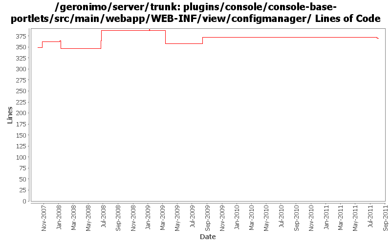

[root]/plugins/console/console-base-portlets/src/main/webapp/WEB-INF/view/configmanager

| Author | Changes | Lines of Code | Lines per Change |
|---|---|---|---|
| Totals | 29 (100.0%) | 198 (100.0%) | 6.8 |
| gawor | 4 (13.8%) | 83 (41.9%) | 20.7 |
| xuhaihong | 3 (10.3%) | 40 (20.2%) | 13.3 |
| rwonly | 3 (10.3%) | 38 (19.2%) | 12.6 |
| dwoods | 14 (48.3%) | 35 (17.7%) | 2.5 |
| jbohn | 1 (3.4%) | 2 (1.0%) | 2.0 |
| pmcmahan | 2 (6.9%) | 0 (0.0%) | 0.0 |
| djencks | 2 (6.9%) | 0 (0.0%) | 0.0 |
GERONIMO-6059 use global javascript definitions
20 lines of code changed in 1 file:
GERONIMO-6059 New look and feel of Geronimo 3.0 admin console (Step 1)
0 lines of code changed in 1 file:
GERONIMO-6094 Some issues of confirm msg tld in admin console
18 lines of code changed in 1 file:
GERONIMO-4659 Include web app "Display Name" in console web app portlet (Patch from Victor Fang)
18 lines of code changed in 1 file:
GERONIMO-4517 Apply unified message display style(G-4484) to javascript alert messages. Together with the localization of these messages. Thanks for the patch, Gang Yin
21 lines of code changed in 1 file:
GERONIMO-4555 Can't start App Client after stop it from console
1 lines of code changed in 1 file:
part 4 of more cleanup of old forms (see Rev738104 for part 3)
2 lines of code changed in 1 file:
GERONIMO-4474 Pull out the text in the JSP files to resource bundle files. Applied jsp-localization-fix.patch from Gang Yin.
1 lines of code changed in 1 file:
GERONIMO-4484 Extraction, localization and display of messages generated in portlets. Applied common-message-base.patch and common-message-core.patch from Gang Yin, with some minor updates.
5 lines of code changed in 1 file:
GERONIMO-4025 applied GERONIMO-4025-configmanager-and-infomanager.patch from Rex Wang.
11 lines of code changed in 1 file:
GERONIMO-4474 Pull out the text in the JSP files to resource bundle files. Patches provided by Gang Yin.
2 lines of code changed in 1 file:
GERONIMO-4081 Accessibility issues. Applied GERONIMO-4081-console.patch from Ivan.
2 lines of code changed in 1 file:
added a checkbox to show/hide parent and child components of modules in the console (GERONIMO-4152)
42 lines of code changed in 1 file:
removed duplicated/unused files
0 lines of code changed in 1 file:
make maximimze button work in config manager portlet
17 lines of code changed in 1 file:
GERONIMO-3732 step 3 Move plugin and deployment pages into a console plugin
0 lines of code changed in 2 files:
GERONIMO-1775 Internationalization of the Admin Console. First patch from YunFeng.
14 lines of code changed in 9 files:
updated the config portlet to: 1) in war view, display war files edded in ear files, and 2) in ear view, display the contexts of the embedded war files. (GERONIMO-1945)
24 lines of code changed in 1 file:
GERONIMO-3509 copy the new admin console and its plugins into the server project so they
can be built and released together.
also, merge recent improvements made to the old admin console into the new console:
revs 581420 580352 576651 574637 573719 573616
0 lines of code changed in 2 files: